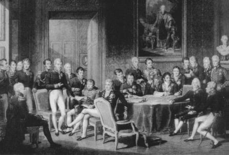

Viyana Kongresi, 1815
1814 Eylülünde, Napoleon Elbe Adası’ndaki ilk sürgününde cezasını çekerken, Napoleon Savaşları’nın galipleri, savaş sonrası dünyasını planlamak için Viyana’da toplandılar. Viyana Kongresi, Napoleon’un Elbe’den kaçıp Waterloo’da son kez yenilmesine kadar toplantılarını sürdürdü. Bu arada, uluslararası düzenin kurulması gereksinimi daha da acil bir hale geldi.
Avusturya’nın görüşmecisi Prens von Metternich idiyse de, kongre Viyana’da toplanmakta olduğundan Avusturya imparatoru da sahneden pek uzak değildi. Prusya Kralı Prens von Hardenberg’i, tahta henüz geçen Fransa’nın XVIII. Louis’si de Talleyrand’ı gönderdi. Talleyrand, devrim öncesinden beri, her Fransız yöneticisine hizmet etmek gibi bir rekora sahipti. Çar I. Aleksandr, Rusya’nın şerefli yerini kimseye emanet etmeyerek kongreye kendisi geldi, İngiliz Dışişleri Bakanı Lord Castlereagh da Büyük Britanya adına görüşmeci olarak katıldı.
Bu beş adam, yapmak için yola çıktıkları şeyi yapmayı başardılar. Viyana Kongresi’nden sonra, Avrupa bilinen en uzun barış devresini yaşadı. Kırk yıl boyunca Büyük Güçler arasında hiçbir savaş olmadı ve 1854 Kırım Savaşı’ndan sonra altmış yıl boyunca hiçbir genel savaş yaşanmadı. Viyana düzenlemesi Pitt’in planına o kadar uyuyordu ki, Castlereagh bu düzenlemeyi Parlamento’ya sunarken, bu planın ne kadar yakın bir şekilde izlendiğini göstermek için orijinal İngiliz planının bir taslağını da ekledi.
Paradoksal olarak bu uluslararası düzen, her ne kadar kendisinden önce ve sonra yapılan bütün anlaşmalardan daha çok güç dengesi adına yapılmış ise de, varlığını korumak için güce en az dayanan düzen olmuştur. Bu benzersiz durum, dengenin, onu bozmak için ihtiyaç gereken muazzam gücü bir araya getirmeyi çok zor kılacak kadar iyi bir şekilde kurulmuş olmasına dayanıyordu. Fakat en önemli sebep, kıta ülkelerinin paylaşılan değerlerle birbirine bağlanmış olması idi. Yalnız fiziki denge değil, moral bir denge de vardı. Güç ve adalet, gerçek anlamda uyum içindeydi. Güç dengesi kuvvet kullanma fırsatını azaltır; paylaşılan adalet duygusu da kuvvet kullanma arzusunu en aza indirir. Adil olmadığı düşünülen bir uluslararası düzen, eninde sonunda bir meydan okumayla karşılaşır. Ancak herhangi bir dünya düzeninin adil olup olmadığının halk tarafından nasıl algılandığı, taktik dış politika sorunları hakkındaki değerleme ile olduğu kadar, o ülkenin iç kurumları ile de belirlenir. Bu nedenle, iç kurumlar arasında uyum olması barış için bir kuvvettir. Metternich, paylaşılan adalet anlayışının uluslararası düzenin ön şartı olduğuna inanışı ile Wilson’un habercisidir; ancak Wilson’un XX. yüzyılda kurumlaştırmaya çalıştığı adalet anlayışına taban tabana zıt bir adalet anlayışına sahipti.
Genel bir güç dengesi yaratmak, nispeten kolay oldu. Devlet adamları Pitt’in planını, bir mimarın planını izler gibi izlediler. Ulusal self-determinasyon düşüncesi henüz icat edilmediğinden, Napoleon’dan geri alınan topraklar üzerinde etnik olarak homojen devletler kurmak düşüncesi üzerinde hiç durmadılar. Avusturya İtalya’da, Prusya Almanya’da güçlendi. Hollanda Cumhuriyeti Avusturya Hollandası’nı ele geçirdi (büyük ölçüde bugünkü Belçika). Fransa, ele geçirdiği bütün toprakları geri vermek ve devrimden önceki “eski sınırlarına” çekilmek zorunda kaldı. Rusya, Polonya’nın orta kısmını aldı (Kıtada toprak edinmeme politikasına uygun olarak, Büyük Britanya Afrika’nın güney ucundaki Ümit Burnu’nu topraklarına katmakla yetindi).
Büyük Britanya’nın dünya düzeni anlayışına göre, güç dengesi, farklı ulusların genel plan içinde kendileri için belirlenmiş rolleri ne kadar başarı ile uyguladıklarına göre değerlendirilir. Birleşik Devletler de ikinci Dünya Savaşı sonrasında ittifaklarını buna göre test etmişti. Büyük Britanya, bu yaklaşımı uygularken, kıta ülkelerine ilişkin olarak Birleşik Devletler’in Soğuk Savaş yıllarında karşılaştığı aynı farklı perspektifle yüz yüze geldi. Çünkü uluslar, amaçlarını bir güvenlik sistemindeki dişliler gibi tanımlamazlar. Güvenlik onların var olmalarını mümkün kılar; ama hiçbir zaman devletlerin tek, hatta temel amacı bile değildir.
Avusturya ve Prusya artık kendilerini, daha sonra Fransa’nın NATO’nun amacını işbölümü terimleri kapsamında görmesinden daha da az “büyük kitleler” olarak değerlendirmekteydiler. Güç dengesi, aynı zamanda onların özel ve karmaşık ilişkilerinin işine yaramıyorsa veya ülkelerinin tarihi rollerini dikkate almıyorsa, Avusturya ve Prusya için çok az şey ifade ediyordu.
Otuz Yıl Savaşları’nda Habsburgların Orta Avrupa’da hegemonya kurmakta başarısız olmalarından sonra, Avusturya bütün Almanya’yı sultası altına almak sevdasından vazgeçti. 1806’da Kutsal Roma İmparatorluğu’nun son kalıntısı da ortadan kaldırıldı. Fakat Avusturya hâlâ kendisini eşitler arasında birinci olarak görmeye devam ediyordu ve başka bir Alman devletinin, özellikle de Prusya’nın, Avusturya’nın tarihi liderlik rolünü ele geçirmesini önlemekte kararlıydı.
Üstelik Avusturya’nın dikkatli olmak için her türlü sebebi de vardı. Avusturya’nın Almanya’daki liderlik iddiası, Büyük Frederick’in Silezya’yı almasından sonra Prusya’nın karşı koymasıyla karşılaştı. Acımasız bir diplomasi, askeri sanatlara düşkünlük ve gelişmiş bir disiplin anlayışı, Prusya’yı, yüzyıl içinde, Kuzey Almanya’nın boş ovalarındaki ikinci sınıf bir prenslikten, Büyük Devletler’in en küçüğü olmakla beraber, askeri bakımdan en korkutucusu olan bir krallık durumuna yükseltti. Biçimsiz sınırları, Kuzey Almanya’da kısmen Polonyalı olan doğudan, bir şekilde Latinleşmiş Ren havzasına (Hanover Krallığı’yla orijinal Prusya topraklarından ayrılmıştı) kadar uzanıyordu. Bu durum, Prusya Devleti’ne karşı konulmaz bir ulusal misyon duygusu veriyordu ki, bu misyon da parçalanmış toprakları savunmak gibi yüksek amaç idi.
Bu iki en büyük Alman devleti arasındaki ilişkiler ve onların diğer Alman devletleriyle olan ilişkileri, Avrupa’nın istikrarı için çok önemliydi. Gerçekten de en azından Otuz Yıl Savaşları’ndan beri, Almanya’nın iç düzenlemeleri sorunu, Avrupa’yı aynı çıkmazla karşı karşıya getirmişti: Almanya zayıf ve parçalanmış durumdayken, komşularının, özellikle de Fransa’nın yayılmacılık iştahını kabartıyordu. Aynı zamanda Almanya’nın birleşme olasılığı da etrafındaki devletleri korkutuyordu ki, bugün de öyle olmaya devam etmektedir. Richelieu’nün, birleşmiş bir Almanya’nın Avrupa’ya egemen olacağı ve Fransa’ya üstün geleceği korkusu, 1609’da bir İngiliz gözlemci tarafından da ifade edilmişti: “Almanya’ya gelince, tek bir monarşik yönetim altına girerse, geri kalanlar için korkunç bir tehlike oluşturur.”{80} Tarihsel olarak, Almanya, Avrupa barışı için, ya çok zayıf, ya da çok kuvvetli olmuştur.
Viyana Kongresi’nin mimarları, Orta Avrupa’yı barış ve istikrara kavuşturmak istiyorlarsa, ilk önce Richelieu’nün 1600’lerde yaptıklarını tersine çevirmeleri gerektiğini anladılar. Richelieu, Fransa için adım adım ele geçirilen ve Fransız ordusuna oyun sahası haline getirilen bir alan sağlayan zayıf ve parçalanmış bir Orta Avrupa gerçekleştirmişti. Böylece Viyana’daki devlet adamları, Almanya’yı bir araya getirmeye (ama birleştirmeye değil) koyuldular. Avusturya ve Prusya önde gelen Alman devletleriydi; onlardan sonra Bavyera, Württemberg ve Saksonya’nın da aralarında bulunduğu ve büyütülen ve güçlendirilen bazı orta büyüklükte devletler geliyordu.
Napoleon’dan önce sayılan üç yüzden fazla olan devletler, otuzdan fazla devlet halinde bir araya getirildi ve adına, Alman Konfederasyonu dendi. Saldırıya karşı ortak savunma sağlayan Alman Konfederasyonu, dâhiyane bir buluş olduğunu gösterdi. Fransa tarafından saldırıya uğramayacak kadar güçlü, aynı zamanda komşularını tehdit edemeyecek kadar da zayıf ve parçalanmıştı. Konfederasyon, Prusya’nın üstün askeri gücünü, Avusturya’nın üstün prestij ve hukuka uygunluğuna karşı dengeledi. Konfederasyonun amacı, Alman birliğinin ulusal bir temele oturmasını engellemek, birtakım Alman prens ve krallarının tahtını korumak ve Fransız saldırısını önlemekti. Bütün bu işlerde başarılı da oldu.
Yenilmiş düşmanla yapılacak barış anlaşmasında, galipler, uyuşmazlıkta zafer için gerekli olan inatçılıktan, kalıcı bir barış için gerekli olan uzlaşmaya geçişi sağlamak zorundadırlar. Cezalandırıcı bir barış, uluslararası düzeni ipotek altına sokar; çünkü savaş dönemi harcamaları ile mali sıkıntı içine düşen galiplere, uzlaşmayı her an bozmaya kararlı bir ülkeyi kontrol altında tutmak görevini yükler. Bir sıkıntısı olan herhangi bir devletin, kötü etkilenmiş mağluptan otomatik destek göreceği kesindir. Bu, Versay Antlaşması’nın da en zayıf noktasıydı.
İkinci Dünya Savaşı’nın galipleri gibi, Viyana Kongresi’nin galipleri de bu hatayı yapmaktan kaçındılar. Yüz elli yıl boyunca Avrupa’yı egemenliği altına almaya çalışan ve orduları elli yıl komşu topraklarında konuşlandırılan Fransa’ya karşı cömert davranmak, kolay bir şey değildi. Bununla beraber, Viyana’daki devlet adamları, Fransa’nın küskün ve kötü etkilenmiş olması yerine, göreceli olarak tatmin edilmiş olması durumunda Avrupa’nın daha çok güvencede olacağına karar verdiler. Fransa’nın ele geçirdiği topraklardan çekilmesi sağlandı; fakat, bu sınırlar Richelieu’nün yönettiğinden daha geniş olmakla beraber, “eski” yani devrim öncesi sınırları kendisine bırakıldı. Fransa’nın en amansız düşmanı olan İngiltere’nin Dışişleri Bakanı Castlereagh, durumu şöyle açıkladı:
“Fransa’nın devam eden aşırılıkları, kuşkusuz Avrupa’yı halen parçalanmaya götürebilir... (Fakat) Müttefiklere, bütün Avrupa güçlerinin ihtiyacı olan bu sessizlik döneminin devam etmesi, bu şansı kullanması için izin verin... şu koşulla ki, eğer başarısız olursa... tekrar silaha sarılacaklar ve bunu yalnızca ellerindeki hâkim pozisyonlarıyla değil, bu işbirliğini bir arada tutacak moral kuvvetle de yapacaklardır.”{81}
1818’de, Fransa, elli yıl boyunca bir Avrupa hükümeti oluşturmaya çok yaklaşmış olan periyodik Avrupa kongrelerinden oluşan kongre sistemine kabul edilmişti.
Ulusların kendi çıkarlarını iyice anladığına ve gerektiğinde bunları savunacaklarına inanan Büyük Britanya, büyük bir olasılıkla meseleyi o noktada bırakmaktan mutluluk duyacaktı, İngilizler, resmi bir güvencenin sağduyulu bir analize katkıda bulunabileceğine, ya da gerekli olduğuna inanmadılar. Ancak, yüz elli yıl savaşın kurbanları olan Orta Avrupa ülkeleri gerçek güvenceler üzerinde ısrarlı oldular.
Özellikle Avusturya, Büyük Britanya’nın hayal bile edemeyeceği tehlikelerle yüz yüze geldi. Feodal dönemin bir kalıntısı olan Avusturya, Almanya ve Kuzey İtalya’daki tarihi pozisyonları etrafında Tuna Nehri havzasındaki birçok ulusu bir araya getiren çok dil konuşulan bir imparatorluktu. Varlığını tehdit eden ve gittikçe daha çok uyumsuzluk yaratan liberalizm ve milliyetçilik akımlarının farkında olan Avusturya, güç uygulamalarını önlemek için, etrafında moral kısıtlamalardan oluşan bir savunma ağı örmeye çalıştı. Metternich’in büyük becerisi, anahtar ülkeleri, uzlaşmazlıklarını, paylaşılan değerler çerçevesinde düşünmeye yönlendirebilmesindeydi. Talleyrand, bazı sınırlayıcı prensiplerin var olmasının önemini şöyle belirtti:
“Savunma durumundaki en az güç... saldırgan gücün en çoğuna eşit olursa... gerçek bir denge oluşabilir. Fakat... bugünkü durum yapay ve güvenilmez bir dengeye dayanmaktadır ve birkaç belli büyük devlet, insaf ve adaletle hareket ederse, ancak yaşayabilir.”{82}
Viyana Kongresi’nden sonra, güç dengesi prensibi ile paylaşılan meşruiyet duygusu arasındaki ilişki iki belgede ortaya kondu: Büyük Britanya, Prusya, Avusturya ve Rusya’dan oluşan Dörtlü ittifak ve Doğu Sarayları denilen üç devletle, yani Prusya, Avusturya ve Rusya ile sınırlı Kutsal ittifak. XIX. yüzyıl başlarında Fransa’ya, tıpkı XX. yüzyılda Almanya’ya bakıldığı gibi, kronik olarak saldırgan ve doğuştan istikrarsızlık yaratan bir güç olarak bakılıyordu. Böylece, Viyana’daki devlet adamları Dörtlü İttifak’ı, herhangi bir Fransız saldırgan eğilimini, daha başlangıçta büyük bir güçle bastırması için oluşturmuşlardır. Galipler, 1918 Versay’da benzer bir ittifak yapmış olsalardı, dünya bir ikinci Dünya Savaşı’nın acısını çekmeyebilirdi.
Kutsal ittifak tamamen farklı idi; Avrupa, hemen hemen iki yüzyıl önce II. Ferdinand Kutsal Roma İmparatorluğu tahtını bıraktığından beri böyle bir belge görmemişti. Uluslararası sistemi yenilemek ve katılanları düzeltmek gibi kendi kendine verdiği bir misyonda ısrarlı olan Rus Çarı bu öneriyi yapmıştı. 1804’te, Pitt onun liberal kurumlar için yaptığı önerileri etkisiz hale getirmişti; ancak Aleksandr 1815’te, bu şekilde reddedilmeyecek kadar güçlü bir zafer duygusuyla doluydu ve şimdiki önerilerinin on bir yıl önce önerdiklerinin tam tersi olduğuna da hiç aldırmıyordu. Artık Aleksandr, dinin ve muhafazakâr değerlerin bir savunucusuydu ve uluslararası sistemin tam bir reforma tâbi tutulmasından daha az bir şey de istemiyordu: “Karşılıklı ilişkilerde, devletlerin önceden kabul ettiği yol temelden değişmelidir ve bu yolun yerini, acilen kurtarıcımızın (İsa’nın) ebedi dininin yüksek gerçeklerine dayanan bir düzen almalıdır.”{83}
Avusturya İmparatoru, bu düşüncelerin, Bakanlar Kurulu’nda mı, yoksa günah çıkarma hücresinde mi tartışılmasının daha doğru olacağı hakkında tereddüt içinde bulunduğunu söyleyerek espri yaptı. Fakat şunu da iyi biliyordu ki, ne Çar’ın bu konudaki girişimine katılabilecek, ne de onu reddedip Aleksandr’ın eline, Avusturya’yı müttefiksiz olarak dönemin liberal ve ulusal akımları ile karşı karşıya bırakarak, bu işe tek başına girişmek için bir bahane verebilecekti. Bu nedenle Metternich, Çar’ın planını, sonradan Kutsal ittifak olarak adlandırılan ve dinsel emirleri imzacıların Avrupa’da statükoyu korumakla yükümlü oldukları biçiminde yorumlayan bir yapıya dönüştürdü. Modern tarihte ilk kez, Avrupa’nın Büyük Devletleri, kendilerine ortak bir misyon vermiş oluyorlardı.
Hiçbir İngiliz devlet adamı, başka devletlerin içişlerine müdahale hakkı –gerçekte yükümlülük– doğuran herhangi bir düzenlemeye katılamazdı. Castlereagh, Kutsal İttifak’a “bir yüce mistisizm ve saçmalık örneği”{84} demiştir. Oysa Metternich bunu, Çar’ın hukuka uygun bir yönetime bağlanmasını sağlamak ve her şeyden çok onun bu misyonerce güdülerini tek başına ve hiçbir kısıtlama olmadan uygulamaya koymasını önlemek için bir fırsat olarak gördü. Kutsal ittifak, muhafazakâr kralları, devrime karşı ve savaşta bir araya getirmiş, fakat aynı zamanda birlikte hareket etme zorunluluğu da koymuştur ki sonuçta, kendisini baskı altında tutan Rus müttefikinin maceralarına karşı Avusturya’ya teorik bir veto hakkı da vermiştir. Avrupa Konferansı denilen düzen, bir düzeyde birbiri ile rekabet halinde olan ulusların, genel istikrarı ilgilendiren konulan konsensüs yoluyla çözebileceği varsayımına dayanıyordu.
Kutsal İttifak, Viyana düzenlemelerinin en orijinal yönüdür. Onun yüceltilmiş adı, dikkatleri uygulamadaki öneminden başka taraflara çekmiştir ki, bu da Büyük Devletlerin ilişkilerine moral bir sınırlama unsuru getirmesiydi, iç kurumlarının yaşaması sonucu geliştirdikleri haklar, Kıta Avrupası ülkelerinin bir yüzyıl önce olsa peşinde koşacakları çatışmalardan mümkün olduğu kadar kaçınmalarına neden olmuştur.
Bununla beraber, birbiri ile uyumlu kurumların kendi başlarına barışçı bir güç dengesi sağladığını söylemek çok basit bir görüş olur. XVIII. yüzyılda, Kıta Avrupası’nın bütün ülkelerinin yöneticileri, ilahi hakka dayanarak ülkelerini yönetiyorlardı; iç kurumları da birbiriyle son derece uyumlu idi. Ancak bu aynı yöneticiler ülkelerini bir süreklilik duygusu içinde yönettiler ve iç kurumlarının doğruluklarından kuşku duyulamayacağını düşündükleri için birbirleriyle sonu gelmeyen savaşlar yaptılar.
İç kurumların doğasının, bir devletin uluslararası alandaki tavrını belirlediğine inanan ilk devlet adamı Woodrow Wilson değildi. Metternich de buna inanıyordu; fakat inancı, tamamen değişik temellere dayanıyordu. Wilson demokrasilerin, doğası gereği barışsever ve rasyonel olduğuna inanırken, Metternich onları tehlikeli ve güvenilmez buluyordu. Cumhuriyetçi Fransa’nın Avrupa’ya çektirdiklerine tanık olunduktan sonra, Metternich, barışı, meşru bir yönetimle bir tuttu. Eski hanedanların taçlı başlarından, eğer barışı koruyamıyorlarsa, onların hiç değilse uluslararası ilişkilerin temel yapısını korumalarını bekledi. Bu şekilde, meşruiyet, uluslararası düzeni bir arada tutan harç haline geldi.
Ülke içi adalet ve uluslararası düzen konularına yaklaşımlarında Wilson ile Metternich arasındaki fark, Amerika ve Avrupa’nın birbirine zıt görüşlerini anlamak için çok önemlidir. Wilson, devrimci ve yeni olarak nitelendirdiği prensipleri için âdeta bir haçlı seferi ilan etmiştir. Metternich ise, eski olduğunu düşündüğü değerleri kurumsallaştırmak istedi. Bilinçli olarak insanları özgür yapmak için yaratılan bir ülkeye başkanlık yapan Wilson, demokratik değerlerin kanunlaşabileceğine ve sonra da tüm yenidünya kurumlarında yerini alabileceğine inanmıştı. Kurumları zamanla ve neredeyse kendi kendine gelişen eski bir ülkeyi temsil eden Metternich ise, hakların yasama yoluyla yaratılabileceğine inanmıyordu. Metternich’e göre “haklar” eşyanın doğasında vardır; kanunla veya anayasayla doğrulanmış olması, önemli bir teknik husus olup, özgürlüğü sağlamakla ilgisi yoktur. Metternich, hakların güvence altına alınmasının bir paradoks yaratacağını düşünmektedir: “Kendiliğinden var olması gereken şeyler, keyfi bir bildiri şeklinde ortaya çıkarsa gücünü yitirir... Yanlış olarak kanun konusu yapılan şeyler, korunmaya çalışılanların tam olarak ortadan kaldırılmasıyla değilse bile, sınırlandırılması ile sonuçlanır.”{85}
Metternich’in görüşlerinin bir kısmı, oluşmakta olan yenidünyaya ayak uyduramayan Avusturya İmparatorluğu’nun uygulamalarının rasyonelleştirilmesi niteliğindeydi. Fakat Metternich aynı zamanda, kanunların ve hakların doğada mevcut olduğunu, emirle olmadığını kabul eden akılcı görüşü de yansıtıyordu. Onun görüşlerini şekillendiren deneyim, insan hakları ilanı ile başlayan ve Terör Devri’yle son bulan Fransız Devrimi idi. Çok daha yumuşak bir ulusal deneyimden ve modern totalitarizmin yükselişinden on beş yıl önce ortaya çıkan Wilson, halkın iradesinde hata olabileceğini anlayamazdı.
Viyana-sonrası dönemde, Metternich uluslararası sistemi yönetmekte ve Kutsal İttifak’ın beklentilerini yorumlamakta belirleyici bir rol oynadı. Mettemich, bu rolü üstlenmeye zorlandı; çünkü Avusturya, her fırtınanın tam yolu üzerinde olan ve iç kurumları yüzyılın ulusal ve liberal eğilimlerine uyumu gittikçe azalan bir ülkeydi. Prusya, Avusturya’nın Almanya’daki pozisyonu üzerine ve Rusya da, Balkanlar’daki Slav halkı üzerine birer karabasan gibi çökmüşlerdi. Üstelik Orta Avrupa’da da, Richelieu’nün mirasını geri istemeye hevesli bir Fransa daima vardı. Metternich şunu çok iyi biliyordu ki, bu tehlikelerin güç uygulamalarına dönüşmesine izin verilirse, somut anlaşmazlığın sonucu ne olursa olsun, Avusturya kendisini tüketecekti. Bu sebeple, Metternich’in politikası, moral bir fikir birliği oluşturarak krizlerden kaçınmak ve kaçınamadıklarını da, Benelüx ülkelerinde, Fransa’ya karşı Büyük Britanya; Balkanlar’da Rusya’ya karşı Büyük Britanya ve Fransa ve Almanya’da, Prusya’ya karşı küçük devletler gibi çatışmanın yükünü taşımaya istekli olan ulusu gizlice destekleyerek yolundan saptırmaktı.
Metternich’in olağanüstü diplomatik becerisi de, bilinen diplomatik gerçekleri, işleyen dış politika prensiplerine dönüştürmesine izin verdi. Her biri Avusturya imparatorluğu için jeopolitik tehlike oluşturan Avusturya’nın en yakın iki müttefikini, devrimin yarattığı ideolojik tehlikenin stratejik fırsatlardan daha ağır bastığına inandırdı. Prusya Alman milliyetçiliğini kullanmak isteseydi, Bismarck’tan bir kuşak önce, Avusturya’nın Almanya’daki üstünlüğüne meydan okuyabilirdi. Çar I. Aleksandr ve I. Nikola yalnızca Rusya’nın jeopolitik olanaklarını düşünseydiler, Osmanlı İmparatorluğu’nun parçalanmasını –yerine gelenlerin yüzyıl içinde sonradan yaptıkları gibi– Avusturya’nın kesin zararına olarak kullanabilirlerdi. Her ikisi de avantajlarının peşine düşmekten kendilerini alıkoydular; çünkü bu, egemen ilke olan statükonun korunması ilkesine ters düşerdi. Napoleon’un şiddetli saldırısından sonra ölüm döşeğinde gibi görünen Avusturya, onu bir yüzyıl daha yaşatabilen Metternich’in sistemi ile yeniden hayat buldu.
Bu tarihin akışına ters düşen devleti kurtaran ve politikasını yaklaşık elli yıl yöneten Metternich, on üç yaşından önce Avusturya’yı hiç görmemiş ve on yedi yaşından önce hiç Avusturya’da yaşamamıştı.{86} Prens Klemens von Metternich’in babası, o zamanlar bir Habsburg toprağı olan Ren Bölgesi’nin batısındaki toprakların genel valiliğini yapmıştı. Kozmopolit bir kişiliği olan Metternich, Fransızcayı, Almancadan daha rahat konuşurdu. 1824’te Wellington’a şöyle yazıyordu: “Avrupa benim için uzun zamandan beri bir anavatandır, (patrie)”{87} Eleştirmenleri, onun erdemlilik kuralları ve parlak veciz sözleri ile alay ederlerdi. Fakat Voltaire ve Kant onun görüşlerini anlarlardı. Aydınlanma döneminin akılcı bir ürünü olan Metternich, kendisini, doğasına yabancı olan devrim mücadelesi içinde ve yapısını değiştiremediği, kuşatma altındaki bir devletin başbakanı olarak buldu.
Metternich’in stili, ağırbaşlılık ve ılımlılıktı: “Soyut fikirler bir tarafa, biz eşyayı olduğu gibi kabul ederiz ve gerçekler hakkında hayal kurmamak için bütün yeteneğimizi seferber ederiz”{88} ve “dikkatli bir araştırmada, hava olup giden uygarlığın savunulması gibi laflarla, elde tutulup gözle görülen hiçbir şey tanımlanamaz.”{89}
Böyle bir tavır içinde olan Metternich, zamanın heyecanı ile bir yöne savrulmamak için çok çalıştı. Napoleon Rusya’da yenilir yenilmez ve Rus birlikleri daha Orta Avrupa’ya ulaşmadan, Metternich, Rusya’yı, olası bir uzun vadeli tehdit olarak tanımladı. Avusturya’nın komşularının Fransız yönetiminden kurtulmak amacı üzerinde yoğunlaştığı bir zamanda, Napoleon karşıtı koalisyona Avusturya’nın katılımını, savaş amaçlarının, ayakta sallanan imparatorluğunun yaşamını sürdürmesiyle uyumlu olması koşuluna bağladı. Metternich’in tavrı, ikinci Dünya Savaşı’nda demokrasilerin davranış biçiminin tamamen aksi idi ki, bu devletler de kendilerini o zaman Sovyetler Birliği ile kıyaslanabilir şartlarda bulmuşlardı. Castlereagh ve Pitt gibi Metternich de, güçlü bir Orta Avrupa’nın, Avrupa istikrarı için ön şart olduğuna inanmıştı. Mümkün olduğu kadar kuvvet uygulamalarından kaçınmakta kararlı olan Metternich, bir yandan taze kuvvet toplarken, diğer yandan da ılımlı bir üslup oluşturmaya çalıştı:
“(Avrupa) kuvvetlerinin davranışı, coğrafi durumlarına göre değişiyor. Fransa ve Rusya’nın tek bir sınırı var ve bu oldukça güçlü bir sınırdır. Üç sıralı kaleleri ile Ren, Fransa’ya güven veren bir sınır oluşturuyor; korkutucu iklim de Niemen’i Rusya için güvenceli bir sınır yapıyor. Avusturya ve Prusya ise, kendilerini, bütün komşu devletlerin saldırısına her taraftan açık hissetmektedirler. Bu iki gücün devamlı tehdidi altında yaşayan Avusturya ve Prusya, birbirleri ve komşuları ile iyi niyetli ilişkilerle, akıllı ve ölçülü bir politikayla huzur bulabilirlerdi...”{90}
Her ne kadar Avusturya’nın, Fransa’ya karşı çit görevini gören Rusya’ya gereksinimi varsa da, düşünmeden hareket eden müttefikinden ve özellikle de misyonerce eğilimleri olan Çar’dan sıkıntı duyuyordu. Talleyrand, Çar I. Aleksandr’ın, boşu boşuna deli Çar Paul’ün oğlu olmadığını söylemişti. Metternich Aleksandr’ı, “erkekçe meziyetler ile kadınca zaafların garip bir karışımı. Gerçek ihtiraslar için çok zayıf, fakat boş şeyler için de çok güçlü” diye tanımlamıştı.{91}
Metternich için Rusya’nın yarattığı sorun, onun saldırganlığının nasıl kontrol altına alınacağı değildi, böyle bir girişim Avusturya’yı tüketirdi; sorun ihtiraslarının nasıl yumuşatılacağı idi. Bir Avusturyalı diplomat şöyle diyor: “Alek-sandr, dünya barışını istiyor; fakat barış ve onun nimetleri için değil, daha çok kendisi için, kayıtsız şartsız değil, bazı koşullarla istiyor. Kendisi bu barışın hakemi olarak kalmalıdır, dünyanın güven ve mutluluğu ondan sorulmalıdır ve bütün Avrupa kabul etmelidir ki, bu huzur onun eseridir, onun iyi niyetine bağlıdır ve onun kaprisi ile bozulabilir...”{92}
Castlereagh ve Metternich, dengesiz ve her işe karışan Rusya’yı nasıl kontrol edecekleri konusunda farklı düşünüyorlardı. Bir çatışma noktasından uzak bir ada devletinin Dışişleri Bakanı olarak Castlereagh, yalnızca açıktan açığa yapılan saldırılara karşı direnmeye hazırdı ve bu durumda da saldırının, dengeyi tehdit eden bir saldırı olması gerekiyordu. Buna karşılık Metternich’in ülkesi, kıtanın tam ortasında bulunuyordu ve böyle bir şansı yoktu. Aleksandr’a tam güvenmediği için Metternich, ona yakın olmakta ısrar ediyor ve onun yönünden gelebilecek tehditleri daha başlamadan savuşturmaya çalışıyordu. Metternich şöyle yazıyor: “Eğer bir top ateşlenirse, Aleksandr bizi adamlarının başında olarak gelip kurtaracak ve sonra ilahi güç tarafından kendisine verildiğini düşündüğü yasaları uygulaması için hiçbir sınır olmayacaktır.”{93}
Metternich, Aleksandr’ın şevkini kırmak için iki uzatmalı strateji izledi. Metternich’in liderliği altındaki Avusturya, milliyetçilikle mücadelede ön sıralarda yer aldı; ancak Metternich, Avusturya’nın çok fazla deşifre olmasına veya tek-taraflı eylemlerde bulunmasına izin vermemekte de kararlıydı. Rusya’nın misyonerce şevkinin yayılmacılığa dönüşeceğinden korktuğu için diğerlerini tek başlarına hareket etmeye teşvik etmek konusunda daha da isteksizdi. Metternich için ılımlılık, felsefi bir erdem ve pratik bir zorunluluk idi. Avusturya büyükelçilerinden birine verdiği direktifte şöyle diyordu: “Diğerlerinin taleplerini bertaraf etmek, bizim taleplerimizi ileri sürmemizden daha önemlidir... ne kadar az şey istersek, göreceli olarak o kadar çok şey elde etmiş oluruz.”{94} Mümkün olduğu kadar, Çar’ı, zaman alıcı görüşmelerin içine çekerek ve Avrupa konsensüsünün kabul edebileceği sınırlar içinde tutarak, onun misyonerce planlarını yumuşatmaya çalışırdı.
Metternich’in stratejisinin ikinci uzatmalı ucu ise, muhafazakâr birlikti. Eyleme geçmenin kaçınılmaz hale geldiği her zaman Metternich, şöyle açıkladığı kandırmaca eylemlerine başvururdu: “Avusturya her şeyi özüne atıfta bulunarak değerlendirir. Rusya, her şeyden önce şekil istiyor; Britanya ise şekilsiz öz istiyor... Britanya’nın imkânsızlarını Rusya’nın şekilleri ile bir araya getirmek ise, bizim görevimizdir.”{95} Metternich’in becerikliliği, korktuğu ülke olan Rusya’yı tutucu çıkarların birliği temelinde bir ortak yaparak ve güvendiği Büyük Britanya’yı da güç dengesine yöneltilen tehlikelere karşı direniş için başvurulabilecek bir son merci haline getirerek, bir kuşak boyunca Avusturya’nın olayların akışını kontrol edebilmesini sağladı. Yine de kaçınılmaz sonuç, sadece geciktirilebilmişti. Ancak böyle olsa bile, eski bir devleti, çevresindeki egemen eğilimlerle uyumsuz değerlere dayanarak tam bir yüzyıl yaşatmak, azımsanacak bir başarı değildir.
Metternich’in karşı karşıya bulunduğu çıkmaz, Çar’a yaklaştığı oranda İngilizlerle bağlantılarını tehlikeye sokması ve bu tehlikeyi daha çok göze aldıkça, yalnızlıktan korunmak için Çar’a daha çok yaklaşmak zorunda kalmasıydı. Metternich için ideal karışım, toprak dengesini korumak için İngiliz desteği ve iç ayaklanmaları bastırmak için Rus desteğiydi; yani jeopolitik güvenlik için Dörtlü ittifak ve iç istikrar için Kutsal ittifak idi.
Fakat zaman geçip de Napoleon’la ilgili anılar kaybolunca, bu karışımı korumak gittikçe zorlaşmaya başladı, ittifaklar, ortak güvenlik sistemine ve Avrupa hükümetine ne kadar yaklaşırsa, Büyük Britanya da o kadar kendini bundan uzak tutmak zorunluluğunu hissediyordu ve Büyük Britanya ne kadar kendini çekerse, Avusturya o kadar Rusya’ya bağımlı hale geliyor, sonuçta daha katı bir şekilde muhafazakâr değerleri savunuyordu. Bu, kınlamayacak bir kısır döngü idi.
Castlereagh Avusturya’nın problemlerine sempati ile bakıyor olsa bile, Büyük Britanya’yı gerçek tehlikeler yerine, olası tehlikelere karşı tedbir almaya ikna etmesi mümkün değildi. Castlereagh açıkça şunu söylüyordu: “Avrupa’nın toprak dengesi bozulursa, İngiltere etkili bir şekilde müdahale eder; fakat soyut karakterdeki bir sorun için kendini yükümlülük altına sokacak en son ülke, İngiltere’dir... Gerçek tehlike Avrupa Sistemi’ni tehdit ettiği zaman biz yerimizi alacağız; fakat bu ülke, soyut ve spekülatif önlem ilkelerine dayanarak harekete geçemez ve geçmeyecektir de.”{96} Bununla beraber Metternich’in sorununun kalbi, onu Büyük Britanya’nın soyut ve spekülatif dediği sorunları pratik sorunlar olarak kabul etmeye zorlayan gereklilikti, iç ayaklanmalar ise, Avusturya’nın en zor halledilebilir bulduğu tehlike idi.
Castlereagh, prensipteki anlaşmazlığı yumuşatmak için Avrupa’daki durumun gözden geçirileceği ve dışişleri bakanlarının katılacağı periyodik toplantılar veya kongreler önerdi. Kongre sistemi olarak tanınan bu sistem, Avrupa’nın karşı karşıya bulunduğu sorunlar hakkında bir görüş birliğine varmaya ve bu sorunları çok-taraflı bir baz üzerinde çözmek için yolu hazırlamaya çalıştı. Ancak Büyük Britanya, bir Avrupa hükümeti sisteminden rahatsızlık duyuyordu; çünkü bu, İngilizlerin istikrarlı bir şekilde karşı çıktıkları Birleşmiş Avrupa’ya çok yakın bir sistemdi. Geleneksel İngiliz politikası bir tarafa, hiçbir İngiliz hükümeti, belirli bir tehditle karşı karşıya kalmadan, ortaya çıkan olayları gözden geçirmek için kendisini yükümlülük altına sokmamıştı, İngiliz kamuoyu için bir Avrupa hükümetine katılmak, Amerikalıların yüzyıl sonra Milletler Cemiyeti’ne katılmasından daha çekici değildi ve nedenler de hemen hemen aynıydı.
İngiliz Kabinesi, ilk kongre olan 1818 Aix-la-Chapelle Kongresi’nde ilk çekincesini çok açık bir şekilde ortaya koydu. Castlereagh, kongreye, isteksiz bir şekilde şu olağanüstü talimatla gönderildi: “Bu toplantıda (genel bir deklarasyonu) büyük güçlükle ve (ikinci derecedeki güçleri)... yapılacak periyodik toplantıların... bir... konuya veya hatta bir güce... Fransa’ya ayrılacağı ve Uluslararası Hukuk’un onaylamadığı hiçbir müdahaleye, hiçbir şekilde başvurulmayacağı konusunda teminat vererek onaylıyoruz... Her zaman bizim gerçek politikamız, çok olağanüstü durumlar haricinde müdahale edilmemesi ve müdahale edilecekse bunun gerekli olan tüm güçle yapılması olmuştur.”{97} Büyük Britanya, Fransa’nın kontrol altında tutulmasını istiyordu; ama bunun ötesinde “kıtada yükümlülük altına girme” ve birleşmiş bir Avrupa korkuları Londra’da egemen durumdaydı.
Büyük Britanya, yalnızca bir tek olayda kongre diplomasisini, amaçlarına uygun buldu. Büyük Britanya, 1821 Yunan Devrimi sırasında, Çar’ın çöken Osmanlı İmparatorluğu’nun Hıristiyan nüfusunu koruma arzusunu, Rusya’nın Mısır’ı ele geçirme girişiminin ilk evresi olarak yorumladı, İngilizlerin stratejik çıkarları tehlikede olunca, Castlereagh, Fransa’yı kontrol etmek için, kullandığı müttefik birliği adına Çar’a başvurmakta tereddüt etmedi. Tipik bir şekilde kuramsal ve pratik sorunlar arasındaki fark üzerinde durdu: “Türkiye sorunu tamamen farklı bir niteliktedir ve biz İngiltere’de bu soruna kuramsal açıdan değil, pratik açıdan bakmaktayız...”{98}
Fakat Castlereagh’in İttifak’a başvurması, her şeyden çok İttifak’ın temelde ne kadar zayıf olduğunu göstermeye hizmet etti. Bir ittifakta, her bir ortak, kendi stratejik çıkarlarını, ittifakın tek pratik sorunu olarak görürse, o ittifakın taraflarına ek bir güvenlik sağlaması olanaksızdır. Çünkü böyle bir ittifak, herhangi bir olayda, ulusal çıkarların zaten getireceği yükümlülükler dışında hiçbir yükümlülük getirmez. Kuşkusuz Metteraich, Castlereagh’m kendi amaçları için, hatta kongre sisteminin kendisi için, açık kişisel sempatisinden rahatlık duyuyordu. Avusturyalı diplomatlardan biri Castlereagh için şöyle diyordu. “Kilisede olan ve bu yüzden çok arzu etmesine rağmen alkışlamaya cesaret edemeyen büyük bir müzik hayranına benziyor.”{99} İngiliz devlet adamlarından en Avrupai düşünceleri olanlar bile inandıklarını alkışlamaya cesaret edememişse, Büyük Britanya’nın Avrupa Konferansı’ndaki rolü, geçici ve etkisiz olmaya mahkûmdu.
Bir yüzyıl sonraki Wilson ve onun Milletler Cemiyeti gibi, Castlereagh’in Büyük Britanya’yı Avrupa kongreleri sistemine katılmak için ikna etme çabaları da, İngiliz temsili kurumlarının hem felsefi, hem de stratejik nedenlerle hoşgörü gösterebileceği sınırları aşmıştı. Wilson gibi Castlereagh da şuna inanmıştı ki, ülkesi, yeni saldırı tehlikelerinden, bu tehditler krize dönüşmeden önce bunlarla ilgilenecek devamlı bir Avrupa forumuna katılırsa, en iyi şekilde korunabilirdi. Castlereagh Avrupa’yı birçok İngiliz çağdaşından daha iyi anlamıştı ve biliyordu ki yeni kurulan denge, çok dikkatli bir yönetim gerektiriyordu. Bu yol, dört galip devletin dışişleri bakanlarının bir dizi toplantısından öteye gitmediğinden ve bağlayıcı bir yanı olmadığından, Büyük Britanya’nın destekleyebileceği bir çözüm yolu oluşturduğunu düşündü.
Fakat tartışma toplantıları bile, İngiliz Kabinesi için çok fazla Avrupa hükümeti kokusu taşıyordu. Gerçekten de kongre sistemi, ilk engeli bile aşamadı. Castlereagh 1818’de Aix-la-Chapelle’deki ilk konferansa katıldığında, Fransa, kongre sistemine kabul edildi ve Büyük Britanya sistemden ayrıldı. Kabine, Castlereagh’in başka Avrupa konferanslarına katılmasına izin vermeyi reddetti ki, bu konferanslar 1820’de Troppau’da, 1821’de Laibach’da ve 1822’de Verona’da yapıldı. Birleşik Devletler’in, bir yüzyıl sonra, kendi başkanı tarafından önerilen Milletler Cemiyeti’nden uzak durması gibi, Büyük Britanya da kendi Dışişleri Bakanı tarafından oluşturulan kongre sisteminden uzak kaldı. Her iki olayda da, en güçlü ülkenin liderinin çabaları ile yaratılan genel ortak güvenlik sistemi, iç engeller ve tarihi gelenekler dolayısıyla başarısız oldu.
Wilson da, Castlereagh da, yıkıcı bir savaştan sonra kurulan uluslararası düzenin, ancak uluslararası topluluğun bütün anahtar üyelerinin ve özellikle de kendi ülkelerinin aktif katılımı ile korunabileceğine inanıyorlardı. Castlereagh’a ve Wilson’a göre, güvenlik ortaktır; herhangi bir devlet kurban edilirse, sonuçta hepsi kurban durumuna düşebilir. Bu şekilde bir bütün olarak anlaşılan bir güvenlik kavramıyla, bütün devletlerin saldırıya karşı koymakta ortak bir çıkarı ve hatta saldırıyı önlemekte daha büyük çıkarları olur. Castlereagh’a göre, özel sorunlarda görüşü ne olursa olsun, Büyük Britanya’nın, genel barışın ve güç dengesinin korunmasında çok açık çıkarı vardı. Wilson gibi, Castlereagh da, bu çıkarı korumak için en iyi yolun, uluslararası düzeni ilgilendiren kararların şekillendirilmesinde ve barışı bozanlara karşı direnişin örgütlenmesinde bir payın üstlenilmesi olduğunu düşünmüştür.
Ortak güvenliğin zayıf tarafı, çıkarların nadiren aynı ve güvenliğin seyrek olarak bir bütün olmasıdır. Bu nedenle, bir genel ortak güvenlik sisteminin üyeleri de, ortak hareket etmekten çok, hareket etmeme konusunda anlaşmaya varmaya eğilimlidirler; ya parlak, kesinlik ifade etmeyen sözlerle bir arada kalırlar veya kendisini en çok güvencede hisseden ve bu yüzden sisteme en az ihtiyacı olan en kuvvetli üyenin ihanetine tanık olurlar. Ne Wilson, ne de Castlereagh, ülkelerini bir ortak güvenlik sistemine sokmayı başarabildiler; çünkü onların toplumları, tahmin edilebilen tehlikeler karşısında kendilerini tehdit altında hissetmediler ve bu tehditlerle tek başlarına başa çıkabileceklerini veya gerekirse son anda müttefik bulabileceklerini düşündüler. Onlara göre, Milletler Cemiyeti’ne veya Avrupa Kongresi’ne katılmak güvenliği artırmadan riski artırırdı.
Ancak iki Anglosakson devlet adamı arasında çok büyük bir fark vardı. Castlereagh, yalnız çağdaşları ile değil, modern İngiliz dış politikasının bütünü ile de uyumsuzdu. Geride bir miras bırakmadı; hiçbir İngiliz devlet adamı Castlereagh’ı örnek almadı. Wilson ise, yalnızca Amerikan motivasyonunun kaynaklarına cevap vermekle kalmadı, aynı zamanda bu motivasyonu yeni ve daha yüksek bir düzeye çıkardı. Yerine gelenlerin hepsi bir dereceye kadar Wilsoncu oldular ve sonradan izlenen Amerikan dış politikası onun düşünceleri ile şekillendi.
İngiliz “gözlemcisi” olarak birkaç Avrupa kongresini izlemesine izin verilen Castlereagh’in üvey kardeşi Lord Stewart, enerjisinin çoğunu, Büyük Britanya’nın bir Avrupa fikir birliğine katkıda bulunmasına değil, ülkesinin yükümlülüğünün sınırlarını belirlemeye harcadı. Troppau’da meşru savunma hakkını doğrulayan bir memorandum sunan Lord Stewart, Büyük Britanya’nın “İttifak’ın bir üyesi olarak genel bir Avrupa polisliği görevi yapmanın moral sorumluluğunu yüklenmeyeceği”{100} üzerinde ısrar etti. Laibach Kongresi’nde, Lord Stewart, Büyük Britanya’nın hiçbir zaman “spekülatif tehditlere karşı kendisini yükümlülük altına sokmayacağını tekrar belirtmek zorunda kaldı. Castlereagh, 5 Mayıs 1820 tarihli resmi bir belgede İngilizlerin konumunu kendisi ortaya koydu. Dörtlü İttifak’ın, “Avrupa’nın büyük bir kısmını Fransa’nın askeri sultasından kurtarmak için kurulmuş bir ittifak olduğunu” doğruladı. “Hiçbir zaman, bir Dünya Hükümeti Birliği veya diğer devletlerin içişlerinin yönetimi gibi bir niyetle kurulmamıştır.”{101}
Sonuçta, Castlereagh kendisini inançları ile iç gereklilikleri arasında sıkışmış buldu. Bu zor durumdan nasıl çıkılacağını bilemedi. Castlereagh, Kral’la son görüşmesinde şöyle dedi: “Efendim, Avrupa’ya veda etmek gereklidir; yalnızca siz ve ben Avrupa’yı tanıyoruz ve onu kurtardık, benden sonra gelecek hiç kimse kıtanın işlerini anlamayacaktadır.”{102} Dört gün sonra da intihar etti.
Avusturya günden güne Rusya’ya daha bağımlı hale gelirken, Metternich’in en çapraşık sorunu, Çar’ın tutucu ilkelerine hitap etmenin, Rusya’yı ne zamana kadar Balkanlar’da ve Avrupa’nın kanat bölgelerinde ele geçirdiği fırsatları kullanmaktan ve Avrupa yolundan alıkoyacağı idi. Bu sorunun cevabı otuz yıl olarak ortaya çıktı. Bu süre içinde, Metternich, bir taraftan Avrupa fikir birliğini etkin bir şekilde sağlar ve Rusya’nın Balkanlar’a müdahalesini önlerken, diğer taraftan Napoli, İspanya ve Yunanistan’daki devrimlerle de uğraştı.
Fakat Doğu sorunu bitmedi. Özünde bu sorun, değişik milliyetler Türk yönetiminden kurtulmaya çabalarken, Balkanlar’da ortaya çıkan bağımsızlık mücadelelerinin bir sonucu idi. Bunun Metternich sisteminde yarattığı şaşkınlığın nedeni, sistemin statükoyu koruma yükümlülüğü ile çatışması ve bugün Türkiye’ye yönelen bağımsızlık hareketlerinin, yarın Avusturya’ya dönebileceğiydi. Üstelik hukuka uygunluğa en bağlı olan Çar da müdahale etmek için çok istekli görünüyordu ve ne Londra’da, ne de Viyana’da hiç kimse, orduları harekete geçtikten sonra Çar’ın statükoyu koruyacağına inanmıyordu.
Osmanlı İmparatorluğu’nun çöküşünün şokunu hafifletmek şeklindeki ortak çıkar, bir süre Büyük Britanya ile Avusturya arasında sıcak bir ilişki yarattı, İngilizler, Balkan sorunlarına çok az ilgi duyuyorsa da, Boğazlar’a doğru Rus ilerlemesi, İngilizlerin Akdeniz’deki çıkarları için bir tehdit olarak algılandı ve kuvvetli bir direnişle karşılandı. Metternich, İngilizlerin, Rus yayılmacılığına karşı çabalarına hiçbir zaman doğrudan doğruya katılmadıysa da, bunları memnuniyetle karşıladı. Metternich’in Avrupa’nın birliğini vurgulamak, Ruslara iltifat etmek ve İngilizleri cesaretlendirmekten oluşan dikkatli ve isimsiz politikası, diğer devletler Rus yayılmacılığını önlemenin yükünü taşırken, Avusturya’ya Rus seçeneğini koruma olanağını tanıdı.
Metternich’in 1848’de sahneden çekilmesi, Avusturya’nın Viyana düzenlemesini korumak için tutucu çıkarlar birliğini kullandığı ip cambazlığı için de sonun başlangıcı oldu. Açıktır ki meşruiyet, Avusturya’nın jeopolitik pozisyonundaki devamlı gerilemenin veya iç kurumları ile temel ulusal eğilimler arasındaki gittikçe büyüyen uyumsuzlukların bedelini sonsuza kadar ödeyemezdi. Fakat ayrıntıda farklı olabilmek, devlet adamlığının esasıdır. Metternich Doğu sorununu ustalıkla yönetti; fakat yerine gelenler, Avusturya’nın iç kurumlarını zamana adapte etmekte başarılı olamadı ve bu sorunu, Avusturya diplomasisini o sırada yükselmekte olan ve meşruiyet kavramının da sınırlamadığı güç politikası eğilimi ile aynı paralele getirerek çözmeye çalıştılar. Bu, uluslararası düzenin de sonu olacaktı.
Böylece, Avrupa Konferansı sonunda, Doğu sorunu örsü üzerinde parçalandı. 1854’te Büyük Devletler, Napoleon günlerinden beri ilk defa savaşa girdiler. Hayret edilecek bir şekilde, tarihçiler tarafından uzun süre anlamsız ve kaçınılabilir bir savaş olarak eleştirilen bu savaş, yani Kırım Savaşı, Rusya, Büyük Britanya veya Avusturya gibi Doğu sorununda büyük çıkarları olan ülkeler tarafından değil, Fransa tarafından çabuklaştırılmıştır.
Henüz yeni bir darbe ile iş başına gelen Fransız İmparatoru III. Napoleon, 1852’de Türk Sultanı’nı, Rus Çarı’nın geleneksel olarak kendisi için ayırdığı bir rol olan Osmanlı İmparatorluğu’ndaki Hıristiyanların koruyucusu olma payesini kendisine vermeye ikna etti. I. Nikola, meşru olmayan bir türedi olarak gördüğü Napoleon’un, Balkan Slavlarının koruyucusu olan Rusların yerine geçmeye kalkışmasına kızdı ve Fransa ile eşit statü istedi. Sultan, Rus elçisini reddedince, Rusya diplomatik ilişkileri kesti. XIX. yüzyılda İngiliz dış politikasını şekillendiren Lord Palmerston, Ruslardan aşırı derecede kuşku duyardı; Kraliyet Donanması’nı hemen Çanakkale Boğazı’nın dışında olan Besika Körfezi’ne gönderdi. Hâlâ Metternich sisteminin havası içinde olan Çar, diğer Büyük Devletlere atıfta bulunarak: “Siz dördünüz beni belli bir şeye zorlayabilirsiniz; fakat bu, hiçbir zaman gerçekleşmeyecektir. Berlin ve Viyana’ya güveniyorum”{103} dedi. Aldırmadığını göstermek için de Moldavya ve Eflak prensliklerinin (bugünkü Romanya) işgalini emretti.
Bir savaştan en çok zararlı çıkacak olan Avusturya, en açık çözüm olan Osmanlı Hıristiyanlarının koruyuculuğunu Fransa ve Rusya’nın birlikte yapmalarını önerdi. Palmerston her iki sonuca da razı değildi. Büyük Britanya’nın pazarlık gücünü artırmak için Kraliyet Donanması’nı Karadeniz’in girişine gönderdi. Bu Türkiye’ye, Rusya’ya savaş ilanı için cesaret verdi. Büyük Britanya ve Fransa da Türkiye’yi desteklediler.
Ancak savaşın gerçek sebepleri daha derindi. Dini iddialar, gerçekte politik ve stratejik planların birer bahanesiydi. Nikola, İstanbul’u ve Boğazlar’ı almak gibi eski bir Rus rüyasını gerçekleştirmenin peşindeydi. III. Napoleon, Fransa’nın yalnızlığına son vermek ve Rusya’yı zayıflatarak Kutsal İttifak’ı bozmak için bu durumu fırsat bildi. Palmerston, Rusya’nın Boğazlar’a yürüyüşüne kesin olarak son vermek için bazı bahaneler aradı. Savaşın başlaması ile birlikte İngiliz savaş gemileri Karadeniz’e girdiler ve Rusya’nın Karadeniz filosunu yok etmeye başladılar. Bir İngiliz-Fransız kuvveti, Rusya’nın deniz üssü Sivastopol’ü ele geçirmek için Kırım’a çıktı.
Bu olaylar, Avusturya liderleri için karmaşadan başka bir şey değildi. Bir yandan Rusya ile geleneksel dostluklarına önem veriyorlar, bir yandan da Rusya’nın Balkanlar’da ilerlemesinin, Avusturya’daki Slav halklarının huzursuzluğunu artırabileceğinden korkuyorlardı. Eski dostları Rusların tarafında yer almalarının, aynı zamanda Fransa’nın eline, Avusturya’nın İtalyan topraklarına saldırması için bir bahane vereceğinden de korkuyorlardı.
Avusturya ilk önce, mantıklı bir hareket olan tarafsızlığını ilan etti. Fakat Avusturya Dışişleri Bakanı Kont Buol, hareketsizliği çok sinir bozucu ve Fransa’nın Avusturya’nın İtalya’daki topraklarını tehdit etmesini ise, çok tedirgin edici buldu, İngiliz ve Fransız orduları Sivastopol’ü kuşatırken, Avusturya bir ültimatom vererek Rusya’nın Moldavya ve Eflak’tan çekilmesini istedi. Bu, Kırım Savaşı’nı sona erdiren kesin faktör oldu –hiç değilse Rus liderlerinin o tarihten bu yana düşünegeldikleri şey budur.
Avusturya, tarihi Napoleon Savaşları’na kadar giden Rusya ile sağlam dostluğunu ve I. Nikola’yı bir çırpıda gözden çıkardı. Korkunun artırdığı şaşkınlığın etkisi altında olan Metternich’in yerine gelenler, bir kuşak boyunca dikkatli bir şekilde ve bazen acı ile biriktirdikleri tutucu birliğin mirasını reddettiler. Avusturya, ilk defa olarak paylaşılan değerlerin zincirlerinden kendisini kurtarmış oldu; ama aynı zamanda, Rusya’yı da, kendi politikasını jeopolitik değerleri üzerine oturtarak yürütmek için serbest bıraktı. Kendine böyle bir yön çizen Rusya’nın, Balkanlar’ın geleceği konusunda Avusturya ile çatışması ve zamanı gelince Avusturya İmparatorluğu’nun altını oymaya çalışması kaçınılmazdı.
Viyana düzenlemesinin elli yıl yaşamasının nedeni, üç Doğu gücünün –Prusya, Rusya ve Avusturya’nın–, aralarında sağladıkları birliği, devrim kaosunun ve Fransa’nın Avrupa’daki sultasının önünde önemli bir engel olarak görmeleriydi. Fakat Kırım Savaşı’nda Avusturya, (Talleyrand Avusturya için “Avrupa Asiller Odası” derdi) İtalya’da Avusturya’nın altını oymaya istekli III. Napoleon ile ve Avrupa sorunları ile ilgilenmekte isteksiz Büyük Britanya ile kolay olmayan bir ittifaka yol açan bir manevra yaptı. Böylece Avusturya, Kutsal İttifak’ta, eskiden ortakları olan Rusya ve Prusya’yı, kendi su katılmamış ulusal çıkarlarını kovalamakta tamamen serbest bıraktı. Prusya, Avusturya’ya Almanya’dan çekilmeye zorlamakla bunu ödetti; Rusya’nın Balkanlar’da gittikçe artan düşmanca tavrı, Birinci Dünya Savaşı’nı ateşleyen kıvılcıma dönüştü ve Avusturya’nın nihai çöküşüne sebep oldu.
Güç politikasının gerçekleri ile karşı karşıya gelen Avusturya, kurtuluşunun Avrupa’nın hukuka bağlılığında olduğunu anlayamadı. Tutucu çıkarları birliği kavramı, ulusal sınırları aşmıştı ve güç politikasının yol açtığı çatışmaları yatıştırma eğilimi gösterdi. Milliyetçilik ise, ulusal çıkarları alevlendirmek, rekabeti şiddetlendirmek ve herkes için riski artırmakla bunun tam tersini yaptı. Avusturya, kendisini öyle bir çatışmanın içine attı ki, zayıflığı düşünüldüğünde, kazanması olanaksızdı.
Kırım Savaşı’nın sona ermesinden itibaren beş yıl içinde, İtalyan milliyetçi lider Camillo Cavour, daha önce mümkün görünmeyen Fransız ittifakını ve Rusya’nın desteği Avusturya’yı savaşa kışkırtarak, İtalya’dan atma sürecini başlattı. Sonraki beş yıl içinde ise Bismarck, Almanya’da üstünlük mücadelesinde Avusturya’yı yendi. Bir kez daha Rusya kendini uzakta tuttu ve Fransa istemeyerek de olsa aynısını yaptı. Metternich’in zamanında Avrupa Konferansı’na başvurulur ve ayaklanmalar kontrol altına alınırdı. Bundan böyle diplomasi paylaşılan değerlere değil, çıplak güce daha çok dayanacaktı. Barış bir elli yıl daha korundu. Fakat her on yılla birlikte gerginlikler arttı ve silahlanma yarışı hızlandı.
Güç politikasıyla yönlendirilen bir uluslararası sistemde, Büyük Britanya tamamen farklı bir davranış içinde oldu. Her şeyden önce Büyük Britanya, güvenliği için hiçbir zaman kongre sistemine inanmadı; Büyük Britanya için uluslararası ilişkilerin yeni modeli, her zaman olduğundan daha çok iş hayatına benziyordu. XIX. yüzyıl boyunca, Büyük Britanya, Avrupa’da nüfuzlu bir ülke durumuna geldi. Tek başına ayakta duracak kadar güçlüydü ve coğrafi uzaklık ve kıtadaki iç ayaklanmalara karşı bağışıklık avantajlarına sahipti. Fakat, aynı zamanda ulusal çıkarlara, duygusal olmayan bir şekilde bağlı olan, istikrarlı liderlere sahip olma avantajı da vardı.
Castlereagh’ın yerine gelenler, kıtayı onun kadar iyi anlamanın yanına bile yaklaşamadılar. Fakat temel İngiliz ulusal çıkarlarının nelerden oluştuğunu çok iyi kavradılar ve bu çıkarları olağanüstü beceri ve ısrarla izlediler. Castlereagh’ın halefi olan George Canning, Castlereagh’ın Avrupa Kongre sistemi üzerindeki etkisini sağlayan son birkaç bağı da ortadan kaldırmakta hiç zaman kaybetmedi. 1821’de Castlereagh’ın yerine geçmeden bir yıl önce, Canning “sözde ve işte tarafsızlık”{104} politikası çağrısı yaptı: “Delice bir aşk tutkusu içinde Avrupa’yı tek başımıza ıslah edebileceğimizi sanmayalım.”{105} Dışişleri Bakanı olduktan sonra, kendisine yol gösteren prensibin, kendi görüşüne göre, Avrupa’da sürekli yükümlülükler üstlenmekle ters düşen ulusal çıkarlar olduğu konusunda hiçbir kuşku bırakmadı:
“Avrupa sistemi ile yakından ilişkiliysek de, bu demek değildir ki, etrafımızı saran devletleri ilgilendiren her olaya, kabına sığamayan bir hareketlilik içinde ve başkalarının işine burnumuzu sokarak karışacağız. “{106}
Diğer bir deyişle, Büyük Britanya, yalnızca ulusal çıkarlarının yol göstericiliğiyle bağlı ve her olayın değerine göre kendi tutumunu belirleme hakkını saklı tutacaktır ve bu politikada müttefikler, ya ikincil konumdadırlar veya gereksizdirler.
Palmerston, 1856’da İngilizlerin ulusal çıkarlarını şöyle tanımlamıştı: “İnsanlar bana politikamızın ne olduğunu sorduğunda... verilebilecek tek cevap şudur: “Bir olay ortaya çıktığında, ülkemizin çıkarlarını tek yönlendirici prensip olarak kabul ederek olayların gerektirdiği en iyi şeyi yapmaya niyetliyiz.”{107} Yarım yüzyıl sonra, İngiliz dış politikasının resmi tanımlaması daha fazla açıklık kazanmış değildir. Dışişleri Bakanı Sir Edvvard Grey şöyle diyordu: “İngiliz Dışişleri bakanları, gelecek için inceden inceye hesaplamalar yapmadan, kendilerine bu ülkenin yakın çıkarı olarak ne görünüyorsa onun tarafından yönlendirilirler.”{108}
Birçok ülkede, bunun gibi açıklamalar, gereksiz yere tekrarlanan sözler olarak alay konusu olurdu: En iyisini yapıyoruz; çünkü bunun en iyi şey olduğunu düşünüyoruz. Büyük Britanya’da bu açıklamalar, aydınlatıcı olarak yapılmıştır; en çok kullanılan terim olan “ulusal çıkar”ın ne olduğunun tanımlanması isteği çok seyrek olarak gösterilmiştir: “Bizim ne ebedi müttefikimiz, ne de devamlı düşmanımız vardır” dedi Palmerston. Liderleri, İngiliz çıkarlarını o kadar iyi ve derinden anlıyorlardı ki, kamuoyunun kendilerini izleyeceğinden emin olarak daha olay çıkar çıkmaz harekete geçebilirlerdi ve dolayısıyla Büyük Britanya’nın resmi bir stratejiye gereksinimi yoktu. Palmerston’un kelimeleri ile: “Çıkarlarımız ebedidir ve bizim görevimiz de bu çıkarlarımızı izlemektir. “{109}
İngiliz liderlerinin, önceden bir casus belli’yi (savaş nedeni) tanımlamak yerine, neyi savunmaya hazır olmadıkları konusunda daha açık olmaları beklenebilirdi. Olumlu amaçların ne olduğunu söylemekte daha çekimserdiler, belki de statükodan yeterince memnunlardı, İngiliz ulusal çıkarlarını görür görmez tanıyacaklarına inanan İngiliz liderleri, önceden bunun hakkında inceden inceye fikir yürütmek gereğini duymadılar. Fiili olayları beklemeyi yeğlediler ki, bu Avrupa ülkeleri için alınması olanaksız bir tavırdı; çünkü bu ülkeler, ortaya çıkan fiili olayların kendisi konumundaydılar.
İngilizlerin güvenlik anlayışı, Amerika’nın yalnızlık politikası taraftarlarının görüşlerine benzemiyor değildi ve bu güvenlik anlayışı içindeki Büyük Britanya, felaketli sonuçları olan ayaklanmalar hariç, her durumda kendisini güvende hissediyordu. Fakat Amerika ve Büyük Britanya, barışla içyapı arasındaki ilişkiye gelince birbirlerinden ayrılıyorlardı, İngiliz liderler hiçbir anlamda, zamanın Amerikalı liderlerinin yaptığı gibi temsili kurumların yaygınlaştırılmasını, barışın anahtarı olarak değerlendirmediler, kendi kurumlarından farklı kurumlarla da ilgilenmediler.
Böylece, 1841’de Palmerston, St. Petersburg’daki İngiliz elçisine Büyük Britanya’nın silah gücü kullanarak hangi olaylara direneceğini ve tamamen iç değişiklik niteliğindeki olaylara neden direnmeyeceğini çok açık şekilde anlattı:
“İngiltere ile diğer devletler arasındaki ilişkilerin yürütülmesinde Majesteleri Hükümetinin bir rehber olarak göz önüne alacağı genel prensiplerden birisi, yabancı ülkelerin kendi anayasalarında ve hükümet biçiminde yapmayı yeğleyecekleri değişikliklerin, İngiltere’nin silah gücü ile müdahale etmeyeceği sorunlar olarak görülmesidir.
Fakat bir ülkenin mülkiyetinde olan toprakları, başka bir ülkenin alıp kendi ülkesine katma girişimi başka bir şeydir; çünkü böyle bir girişim, var olan Güç Dengesi düzeninin bozulmasına yol açar ve devletlerin göreceli güçlerini değiştirerek, diğer güçler için tehlike yaratma eğilimi gösterir; o halde bu tür girişimler, İngiliz Hükümetinin direnme konusunda kendisini tamamen serbest hissettiği girişimlerdir...”{110}
İstisnasız bütün İngiliz bakanları, her şeyden önce, ülkelerinin hareket serbestliğinin korunmasıyla ilgili olmuşlardır. 1841’de Palmerston Büyük Britanya’nın soyut olaylardan hiç hoşlanmadığını bir kez daha şöyle vurgulamıştır:
“İngiltere’nin henüz çıkmamış veya hemen beklenmekte olanlar dışındaki olaylar için yükümlülük altına girmesi olağan değildir...”{111}
Aşağı yukarı otuz yıl sonra, Gladstone Kraliçe Victoria’ya gönderdiği bir mektupta aynı prensibi şöyle dile getirdi:
“İngiltere, ortaya çıkan çeşitli olaylar hakkında kendi yükümlülüğünü belirleme vasıtalarını daima kendi elinde bulundurmalıdır; gerçek veya tahmin edilen çıkarlar söz konusu olduğunda, hiç değilse olayların ortak yorumcusu olmak isteyecek diğer devletlere yapılmış deklarasyonlarla kendi karar verme özgürlüğünü olanaksız hale getirmek ve daraltmak istemez...”{112}
Hareket serbestliği üzerinde ısrarla duran İngiliz devlet adamları, ortak güvenlik temasının bütün çeşitlemelerini kural olarak reddettiler. Sonradan “şahane yalnızlık” olarak tanınan görüş, İngiltere’nin ittifaklardan kârlı çıkmaktan çok, zarar göreceği inancını yansıtmaktadır. Bu derece soğuk bir yaklaşım, ancak tek başına ayakta durabilecek kadar güçlü olan, kendisine yönelik, müttefiklerinin yardımını gerektirecek bir tehlike görmeyen ve kendisine yönelecek büyük bir tehdidin olası müttefiklerini daha da çok tehdit edeceğini bilen bir ülke tarafından benimsenebilir. Avrupa dengesini ayakta tutan bir ülke olarak Büyük Britanya’nın rolü, liderlerine istenilen ve gereksinme duyulan bütün seçenekleri tanıdı. Bu politika tutarlı bir politikaydı, çünkü Avrupa’da toprak kazancı için mücadele etmiyordu; (Her ne kadar denizaşırı toprak edinme iştahı doymak bilmez ise de), İngiltere’nin Avrupa’daki tek çıkarı, denge olduğu için Avrupa kavgalarının hangisine müdahale edeceğini kendisi seçebilirdi.
Ancak Büyük Britanya’nın “şahane yalnızlık” politikası, onu, özel durumlarla ilgilenmek için başka ülkelerle geçici angajmanlara girmekten alıkoymadı. Büyük ve hazır bir ordusu olmayan, bir deniz devleti olan Büyük Britanya, her zaman gereksinme duydukça seçmeyi tercih ettiği bir kıta müttefiki ile zaman zaman işbirliği yapmak zorunda kalmıştır. Böyle durumlarda İngiliz liderler, eski düşmanlıkları hayret edilecek bir şekilde unutmayı başarmışlardır. 1830’da Belçika’nın Hollanda’dan ayrılması sırasında, Palmerston, önce yeni devleti sultası altına almak istemesi halinde Fransa’yı savaşla tehdit etmiş; birkaç yıl sonra ise, Belçika’nın bağımsızlığını güvence altına almak için onunla ittifak yapmayı önermiştir: “İngiltere, tek başına kıta üzerindeki düşüncelerini uygulamaya koyamaz; bu işleri yapmak için araç olarak kullanmak üzere, müttefiklere gereksinimi vardır.”{113}
Kuşkusuz, Büyük Britanya’nın çeşitli ad hoc (özel, geçici) müttefiklerinin de, genellikle Avrupa’da etkilerinin veya topraklarının genişletilmesi biçiminde olan, kendi amaçları vardır. Hareketleri, İngiltere tarafından uygun görülen sınırları aşınca, İngiltere, ya taraf değiştirirdi veya dengenin korunması için eski müttefiklerine karşı yeni koalisyonlar örgütlerdi. Duygusallıktan uzak olmaktaki ısrarlı tutumu ve kendi bencil amaçları için gösterdiği kararlılık, Büyük Britanya’ya “Hain Albion” lakabını kazandırmıştır. Bu tip diplomasi, özellikle yüceltilmiş bir tavır yansıtmayabilir; fakat özellikle Metternich sistemi uçlarından yıpranmaya başladığı zaman, Avrupa barışını koruduğu kesindir.
XIX. yüzyıl, İngiliz etkisinin doruk noktasına ulaştığı yüzyıldır. Büyük Britanya kendine güveniyordu ve bunda da haklı idi: En önde gelen sanayi devletiydi ve Kraliyet Donanması denizlere hâkimdi, iç ayaklanmalar devrinde, İngiliz iç politikası hayret uyandıracak kadar huzurluydu. XIX. yüzyılın büyük sorunlarına gelince, müdahale etme veya etmeme, statükonun korunması veya değişiklik için işbirliği gibi sorunlarda İngiliz liderler kurallarla bağlı olmayı reddettiler. 1820’lerdeki Yunan Bağımsızlık Savaşı’nda Büyük Britanya, Yunanistan’ın Türk yönetiminden koparak bağımsızlığına kavuşmasına, ancak bu şekilde hareket etmekle Rus etkisini artırarak Doğu Akdeniz’deki stratejik pozisyonunu tehlikeye atmadığı sürece sempati ile baktı. Fakat 1840’ta Büyük Britanya, Rusya’yı dizginlemek için müdahale etmek ve bu suretle Osmanlı İmparatorluğu’ndaki statükoyu desteklemek zorunda kalacaktır. 1848 Macar Devrimi’nde, resmen müdahaleci olmayan Büyük Britanya, gerçekte Rusya’nın statükonun tekrar kurulması için yaptığı müdahaleyi memnuniyetle karşıladı, İtalya, 1850’lerde, Habsburg yönetimine karşı ayaklandığı zaman, Büyük Britanya sempati gösterdi, fakat müdahale etmedi. Güç dengesini korumak isteyen Büyük Britanya, kategorik olarak ne müdahaleciydi, ne de müdahaleye karşıydı, ne Viyana düzeninin koruyucusu, ne de bir revizyonist güçtü. Üslubu amansızca pragmatikti ve İngiliz halkı, bu işlerden yüzlerinin akıyla çıkma yeteneklerinden dolayı gurur duyuyordu.
Ancak her pragmatik politika, (gerçekten pragmatik politika) taktik becerinin ziyan edilmesini önlemek için bazı değişmez prensipler üzerine oturtulmalıdır, İngiliz dış politikasının değişmez prensibi, bu ister kabul edilmiş olsun, isterse olmasın, zayıfı kuvvetliye karşı desteklemek anlamına gelen güç dengesinin koruyucusu olmaktır. Palmerston zamanında, güç dengesi İngiliz politikasının öyle değişmez bir prensibi haline gelmişti ki, hiçbir teorik savunmaya gereksinimi yoktu; herhangi bir zamanda izlenen politika ne olursa olsun, kaçınılmaz olarak güç dengesini koruma terimleri ile açıklanır hale geldi. Olağanüstü esneklik, birtakım değişmez ve pratik hedeflerle birleştirildi. Örneğin, Benelux Ülkelerini büyük bir devletin tasallutundan uzak tutmak kararlılığı, III. William dönemi ile I. Dünya Savaşı’nın çıktığı tarih arasında hiç değişmedi. 1870’te Disraeli bu prensibi doğruladı:
“Bu ülkenin hükümeti her zaman şunu savunmuştur: Dunkirk ve Ostend’den Kuzey Denizi adalarına kadar Avrupa kıyısındaki bütün ülkeler, barışçıl sanatlarla uğraşan, özgürlükten yararlanan ve insanlığı uygarlığa götüren amaçlar peşinde koşan ve gelişen toplulukların elinde olsun. Bu ülkenin büyük bir askeri gücün yönetiminde olmaması, İngiltere’nin çıkarınadır...”{114}
1914’te Almanların Belçika’yı işgaline, Büyük Britanya’nın savaş ilanı ile cevap vermesinin, Alman liderleri gerçek bir şaşkınlığa uğratmış olması, Almanların ne kadar izole edilmiş olduklarının bir göstergesidir.
XIX. yüzyılın ortalarında Avusturya’nın korunması, önemli bir İngiliz amacı olarak görülmüştür. XVIII. yüzyılda Marlborough, Carteret ve Pitt, Fransa’nın Avusturya’yı zayıflatmasını önlemek için çeşitli savaşlar yapmışlardı. Her ne kadar Avusturya’nın, XIX. yüzyılda Fransız saldırısından daha az korkusu varsa da, İngilizler, Avusturya’yı, hâlâ Rusya’nın Boğazlar’a doğru genişlemesini önleyecek işe yarar bir karşı ağırlık olarak görüyordu. 1848 Devrimi, Avusturya’nın dağılmasına sebep olacak bir tehdit oluşturduğu zaman, Palmerston şöyle dedi:
“Avrupa’nın ortasında duran Avusturya, bir taraftan saldırıya, diğer taraftan da işgale karşı bir engel görevini yapıyor. Avrupa’nın politik bağımsızlığı ve özgürlükleri, benim görüşüme göre, Avusturya’nın büyük bir Avrupa devleti olarak ayakta durmasına ve toprak bütünlüğüne bağlıdır; bu nedenle Avusturya’yı zayıflatacak veya sakatlayacak, onu birinci sınıf devlet konumundan ikinci sınıf devlet konumuna düşürecek yakın veya hatta uzak herhangi bir şey, Avrupa için büyük bir felaket olur ve her İngiliz’in buna karşı koyması ve bunu önlemeye çalışması gerekir...”{115}
1848 Devrimi’nden sonra, Avusturya sürekli olarak daha zayıf ve politikası da giderek artan bir şekilde hatalı olmaya başladı ve bu durum, Avusturya’nın Doğu Akdeniz’de İngiliz politikasının anahtar elemanı olarak yararlılığını azalttı.
İngiliz politikasının odak noktası, Rusların Çanakkale Boğazı’nı işgal etmelerini önlemekti. Avusturya-Rusya rekabeti, büyük ölçüde, Rusya’nın Avusturya’daki Slav vilayetleri üzerindeki emellerine dayanıyorsa da, bu durum, Büyük Britanya’yı pek ilgilendirmiyordu. Çanakkale Boğazı’nın kontrolü de Avusturya için hayati bir çıkar değildi. Bu nedenle, Büyük Britanya Avusturya’yı, Rusya’ya karşı uygun olmayan bir karşı ağırlık olarak değerlendirmeye başladı. Bu yüzden Büyük Britanya, Avusturya, İtalya’da Piyemonte tarafından ve Almanya’da liderlik çatışmasında Prusya tarafından yenilgiye uğratıldığı zaman, hareketsiz kaldı. Bir kuşak önce böyle bir ilgisizlik akıl alır bir şey olmazdı. Yeni yüzyıla girdikten sonra, Almanya korkusu, İngiliz politikasına egemen oldu ve Almanya’nın müttefiki olan Avusturya, İngiliz değerlendirmelerinde ilk defa düşman olarak ortaya çıktı.
XIX. yüzyılda, hiç kimse bir gün Büyük Britanya’nın Rusya ile müttefik olacağını düşünemezdi. Palmerston’un görüşüne göre, Rusya, “her tarafta evrensel saldırı sistemi izleyen bir ülkedir. Bu, kısmen İmparator’un (Nikola) kişisel karakterinden, kısmen de sürekli hükümet sisteminden gelen bir özelliktir.”{116} Yirmi beş yıl sonra bu görüş Lord Clarendon tarafından da dile getirildi. Lord Clarendon Kırım Savaşı’nı “uygarlığın barbarlığa karşı mücadelesi”{117} olarak görüyordu. Büyük Britanya, yüzyılın büyük bölümünü, Rusya’nın, İran’a yayılma çabalarını, İstanbul ve Hindistan’a yaklaşmalarını kontrol etmeye çalışmakla geçirdi. Temel İngiliz güvenlik kaygısının Almanya’ya yönelmesi için daha birkaç on yıl devam eden Alman duyarsızlığı ve saldırganlığı gerekiyordu ki, bu da yeni yüzyıla girmeden gerçekleşmedi.
İngiliz hükümetleri, Doğu Büyük Devletleri denilen güçlerin hükümetlerinden daha sık değişti; Britanya’nın, Palmerston, Gladstone ve Disraeli gibi başlıca politik şahsiyetlerinden hiçbirisi, Metternich, I. Nikola, Bismarck gibi kesintisiz bir görev süresi yaşamamışlardır. Ancak Büyük Britanya’nın, amacını olağanüstü bir ısrarla kovalama özelliği de vardır. Belirli bir yöne bir kez yöneldiği zaman, amansız bir ısrar ve inatçı bir kararlılıkla o yönde yürümüştür ki, bu özelliği Büyük Britanya’ya, Avrupa’da huzur adına kesin etkide bulunma olanağı sağlamıştır.
Büyük Britanya’nın kriz zamanlarındaki bu değişmez düşünce tarzının bir nedeni, politik kurumlarının temsili doğasıdır. 1700’den beri, İngiliz dış politikasında kamuoyu önemli bir rol oynamıştır. XVIII. yüzyıl Avrupası’nda, diğer hiçbir ülkede dış politika konusunda “karşıt” görüş var olmamıştır; Büyük Britanya’da ise, bu, sisteminin doğasında vardır. XVIII. yüzyılda, Muhafazakârlar kural olarak Kral’ın dış politikasını temsil ederlerdi ve genellikle kıta anlaşmazlıklarında müdahaleden yana tavır koyarlardı; Sir Robert Walpole gibi Liberaller ise, kıtadaki kavgalara uzak durmayı tercih ederlerdi ve denizaşırı yayılmacılığa önem verirlerdi. XIX. yüzyılda roller değişti. Palmerston gibi Liberaller hareketli bir politikayı temsil ederken, Derby ve Salisbury gibi Muhafazakârlar yabancı bağlantılardan sıkılır olmuşlardı. Richard Cobden gibi radikaller ise müdahaleye karşı olan İngiliz tutumunu savunarak Muhafazakârlarla ittifak yapıyorlardı.
İngiliz dış politikası, açık görüşmeler sonunda oluştuğundan, İngiliz halkı savaş zamanlarında olağanüstü bir birlik sergilerdi. Diğer taraftan, bu kadar açıkça partizan olan bir dış politika, seyrek olmakla beraber, başbakan değişince dış politikanın da değişmesini mümkün kıldı. Örnek olarak, 1870’lerde Büyük Britanya’nın Türkiye’yi desteklemesi politikası, Türkleri ahlaki yönden hatalı bulan Gladstone, 1880 seçimlerinde Disraeli’yi yenince, aniden sona erdi.
Büyük Britanya, her zaman politik temsili kurumlarını, kendisine özgü kurumlar olarak görmüştür. Kıta politikaları, ideoloji değil, İngiliz ulusal çıkarları çerçevesinde haklı bulunmuştur. 1848’de İtalya’da olduğu gibi, Büyük Britanya, ne zaman herhangi bir devrime sempati göstermişse, bunu tamamen pratik nedenlerle yapmıştır. Böylece Palmerston, Canning’in pragmatik vecizesinden şöyle bir alıntı yapmıştır: “Yenilik olduğu için gelişmeyi kabul eden kimseler, bir gün artık gelişme olmayan yeniliği kabul etmek zorunda kalırlar.”{118} Fakat bu deneyime dayanan bir öğüt idi, yoksa İngiliz değerlerinin veya kurumlarının yayılması çağrısı değildi. Kısa bir Gladstone’vari perde arasından sonra, Büyük Britanya, bütün XIX. yüzyıl boyunca diğer ülkeleri dış politikalarına göre değerlendirdi ve o ülkelerin içyapılarına karşı kayıtsız kaldı.
Her ne kadar Büyük Britanya ve Amerika, uluslararası uygulamalarla bugünden yarına ilgilenmekten uzak durma konusunda aynı tutumu paylaşıyorlarsa da, Büyük Britanya kendi yalnızcılık politikasını değişik nedenlerle haklı buluyordu. Amerika kendi iç demokratik kurumlarını, dünyanın geri kalan ülkeleri için örnek ilan etti; Büyük Britanya ise, kendi parlamenter kurumlarının, diğer topluluklarla hiçbir ilişkisi yokmuş gibi davrandı. Amerika, demokrasinin yaygınlaştırılmasının, barışı güvence altına alacağına, gerçekten de güvenli bir barışa başka bir şekilde ulaşılamayacağına inanmıştı. Büyük Britanya, belirli bir içyapıyı yeğleyebilir, fakat onun adına risk alamazdı.
1848’de Palmerston, Büyük Britanya’nın, Fransız monarşisinin devrilmesi ve yeni bir Bonaparte’nin ortaya çıkması hakkındaki kuşkularını, İngilizlerin devlet yönetiminin şu pratik kuralına dayanarak bir kenara itti: “İngilizlerin uyguladığı değişmez prensip, her ulusun isteyerek seçtiği siyasi organı, meşru siyasi organ olarak kabul etmektir.”{119}
Palmerston, yaklaşık otuz yıl boyunca Büyük Britanya’nın dış politikasının başlıca mimarıydı. 1841’de Metternich, onun pragmatik üslubunu alaycı bir hayranlıkla şöyle analiz ediyordu:
“... O halde Lord Palmerston ne istiyor? Mısır işinin yalnızca onun istediği gibi ve Fransa’ya, bu işe karışması için hiçbir hakkı olmadığını ispatlayarak bitmesini ve İngiltere’nin gücünü hissetmesini istiyor. İki Alman devletine, onlara gereksinimi olmadığını, Rus yardımının Büyük Britanya için yeterli olduğunu kanıtlamak istiyor, İngiltere’yi, tekrar Fransa’nın yanına çekilmiş şekilde görme daimi endişesi ile Rusya’yı kontrol altında tutmak ve kendi yönüne çekmek istiyor.”{120}
Bu, Britanya’nın güç dengesinden ne anladığının yanlış bir tanımlaması değildir. Sonuçta bu denge, Büyük Britanya’ya büyük bir devletle yapılan nispi olarak kısa bir tek savaşla, Kırım Savaşı’yla yüzyılı kapatma imkânı verdi. Her ne kadar Kırım Savaşı başladığında kimse böyle bir savaşı amaçlamadıysa da, bu savaş, Viyana Kongresi’nde bin bir güçlükle ulaşılan Metternich düzeninin çöküşüne neden oldu. Üç Doğu hükümdarlığı arasındaki birliğin dağılması, Avrupa diplomasisinden moral nitelikteki ılımlılık unsurunu ortadan kaldırdı. Yeni ve çok daha eğreti bir istikrar ortaya çıkıncaya kadar karışıklıklarla dolu on beş yıl geçti.